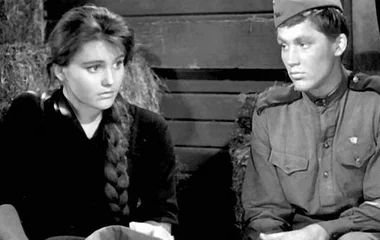
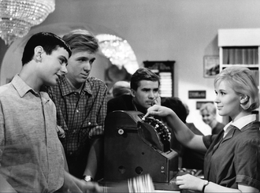

Искренность и «новая волна»
После 1953 года в советском кино происходит десакрализация власти. В центре внимания оказывается не партия, а «внутренний мир личности». Герои обретают право на частную жизнь, сомнения и личную трагедию.
Киноязык становится поэтичным и свободным. Операторская работа Сергея Урусевского в «Летят журавли» совершила революцию: камера «оторвалась» от штатива и начала летать вместе с героями, передавая их чувства через движение и свет.
«Главное — не масштаб сражений, а масштаб человеческой души»
— Гуманистический манифест 60-х
Новое видение войны
Война в фильмах «Баллада о солдате» или «Иваново детство» показана через личную утрату и разрушенную юность. Это кино о том, как человек пытается сохранить достоинство в нечеловеческих условиях, а не о сухих цифрах побед.
Визуальное наследие
Знаковые картины эпохи

«Он мог бы стать замечательным гражданином...»
Баллада о солдате (1959)
Простая и пронзительная история солдата Алеши, чья дорога к матери превращается в портрет целого военного поколения.

Гимн молодости и надежде 60-х.
Я шагаю по Москве (1963)
Лирическая комедия, ставшая символом целого десятилетия. Москва здесь — город солнца, дождя и бесконечного завтра.